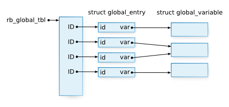
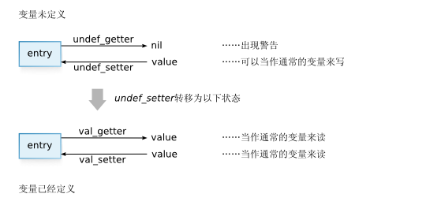

Ruby中有相当多不同类型的变量和常量。让我们列举一下，从范围最大的开始。
实例变量已经在第2章《对象》中解释过了。在本章中，我们要讨论的是：
局部变量会在本书的第三部分讨论。
本章的分析目标是variable.c。我们先来看一下可用的API。
VALUE rb_iv_get(VALUE obj, char *name) VALUE rb_ivar_get(VALUE obj, ID name) VALUE rb_iv_set(VALUE obj, char *name, VALUE val) VALUE rb_ivar_set(VALUE obj, ID name, VALUE val)
我们已经讨论过这些函数，但是必须再次提起它们，因为它们都在variable.c中。
当然，它们是用来访问实例变量的。
VALUE rb_cv_get(VALUE klass, char *name) VALUE rb_cvar_get(VALUE klass, ID name) VALUE rb_cv_set(VALUE klass, char *name, VALUE val) VALUE rb_cvar_set(VALUE klass, ID name, VALUE val)
这些函数是访问类变量的API。类变量直接属于类，因此函数需要用一个类作为参数。
根据名字是以rb_Xv还是rb_Xvar开头，函数分为两组。差别在于变量“名”。
稍短名字的函数通常更易用，因为它们以char*为参数。稍长名字的参数更多在内部使用，
它们以ID为参数。
VALUE rb_const_get(VALUE klass, ID name) VALUE rb_const_get_at(VALUE klass, ID name) VALUE rb_const_set(VALUE klass, ID name, VALUE val)
这些函数用于访问常量。常量属于类，因此它们要以类为为参数。
rb_const_get()会沿超类链查询，而rb_const_get_at()不会（它只查询klass）。
struct global_entry *rb_global_entry(ID name) VALUE rb_gv_get(char *name) VALUE rb_gvar_get(struct global_entry *ent) VALUE rb_gv_set(char *name, VALUE val) VALUE rb_gvar_set(struct global_entry *ent, VALUE val)
最后的这些函数用以访问全局变量。因为使用struct global_entry了，它们显得与众不同。
我们会在描述实现的时候对此进行解释。
本章最重要的话题是“变量存在哪里以及如何存储？”，也就是，数据结构。
第二重要的在于如何搜索值。Ruby变量和常量的范围相当复杂， 因为变量和常量有时可以继承，有时可以在局部范围外看到……为了有个更好的理解， 你应该先从行为上猜测一下其如何实现，然后与真正的实现进行对比。
类变量是属于类的变量。在Java或C++中，它们叫做静态变量。它们既可以从类中访问， 也可以从实例中访问。但是“从实例中”或“从类中”，只是求值器可用的信息。 我们此刻并不知道。因此，从C的层次上来看，它像是没有访问的范围。 我们只关注这些变量存储的方式。
获取类变量的函数是rb_cvar_get()和rb_cv_get()。名字稍长的函数以ID为参数，
短一些的以char*为参数。因为以ID为参数看上去和内核部分更接近，我们来看一下。
rb_cvar_get()
1508 VALUE
1509 rb_cvar_get(klass, id)
1510 VALUE klass;
1511 ID id;
1512 {
1513 VALUE value;
1514 VALUE tmp;
1515
1516 tmp = klass;
1517 while (tmp) {
1518 if (RCLASS(tmp)->iv_tbl) {
1519 if (st_lookup(RCLASS(tmp)->iv_tbl,id,&value)) {
1520 if (RTEST(ruby_verbose)) {
1521 cvar_override_check(id, tmp);
1522 }
1523 return value;
1524 }
1525 }
1526 tmp = RCLASS(tmp)->super;
1527 }
1528
1529 rb_name_error(id,"uninitialized class variable %s in %s",
1530 rb_id2name(id), rb_class2name(klass));
1531 return Qnil; /* not reached */
1532 }
(variable.c)
这个函数读取klass的一个类变量。
正如我之前所说，像rb_raise()这样的错误处理函数可以简单的忽略。
这次出现的rb_name_error()是一个生成异常的函数，因此，基于同样的原因，
也可以忽略它。在ruby中，你可以假设所有以_error结尾的函数都会产生异常。
去除所有这些之后，我们看到的是，沿着klass的超类链，在iv_tbl中搜索。
在这里，你会说“什么？iv_tbl不是实例变量表吗？”事实上，
类变量就是存在实例变量表中。
我们可以这么做，因为创建ID时，考虑的是变量的全名，包括前缀：
rb_intern()对“@var”和“@@var”返回的是不同的ID。
在Ruby的层次上，变量类型有前缀唯一确定，因此在Ruby中无法访问一个叫做@var的类变量。
有些唐突，但是我希望你能记住struct RClass的成员。如果我们排除basic，
struct RClass包括：
VALUE superstruct st_table *iv_tblstruct st_table *m_tbl然后，考虑一下：
struct RClass中，我们没有看到任何常量专用的表iv_tbl中或许常量也……
rb_const_set()是一个为常量设置值的函数：
它将类klass的常量id设为值val。
rb_const_set()
1377 void
1378 rb_const_set(klass, id, val)
1379 VALUE klass;
1380 ID id;
1381 VALUE val;
1382 {
1383 mod_av_set(klass, id, val, Qtrue);
1384 }
(variable.c)
mod_av_set()完成了所有艰苦的工作：
mod_av_set()
1352 static void
1353 mod_av_set(klass, id, val, isconst)
1354 VALUE klass;
1355 ID id;
1356 VALUE val;
1357 int isconst;
1358 {
1359 char *dest = isconst ? "constant" : "class variable";
1360
1361 if (!OBJ_TAINTED(klass) && rb_safe_level() >= 4)
1362 rb_raise(rb_eSecurityError, "Insecure: can't set %s", dest);
1363 if (OBJ_FROZEN(klass)) rb_error_frozen("class/module");
1364 if (!RCLASS(klass)->iv_tbl) {
1365 RCLASS(klass)->iv_tbl = st_init_numtable();
1366 }
1367 else if (isconst) {
1368 if (st_lookup(RCLASS(klass)->iv_tbl, id, 0) ||
1369 (klass == rb_cObject && st_lookup(rb_class_tbl, id, 0))) {
1370 rb_warn("already initialized %s %s", dest, rb_id2name(id));
1371 }
1372 }
1373
1374 st_insert(RCLASS(klass)->iv_tbl, id, val);
1375 }
(variable.c)
这里你可以再次忽略警告检查（rb_raise()，rb_error_frozen()和rb_warn()）。
这是剩下的部分：
mod_av_set() （只有重要的部分）
if (!RCLASS(klass)->iv_tbl) {
RCLASS(klass)->iv_tbl = st_init_numtable();
}
st_insert(RCLASS(klass)->iv_tbl, id, val);
我们现在可以确定，常量是在实例表中。这也就意味着，在struct RClass的iv_tbl中，
下面这些东西混在一起：
我们现在知道了常量如何存储。这回，我们把目光转向常量如何工作。
rb_const_get()我们现在来看一下rb_const_get()，一个读取常量的函数。
这个函数从klass中返回id所引用的常量。
rb_const_get()
1156 VALUE
1157 rb_const_get(klass, id)
1158 VALUE klass;
1159 ID id;
1160 {
1161 VALUE value, tmp;
1162 int mod_retry = 0;
1163
1164 tmp = klass;
1165 retry:
1166 while (tmp) {
1167 if (RCLASS(tmp)->iv_tbl &&
st_lookup(RCLASS(tmp)->iv_tbl,id,&value)) {
1168 return value;
1169 }
1170 if (tmp == rb_cObject && top_const_get(id, &value))
return value;
1171 tmp = RCLASS(tmp)->super;
1172 }
1173 if (!mod_retry && BUILTIN_TYPE(klass) == T_MODULE) {
1174 mod_retry = 1;
1175 tmp = rb_cObject;
1176 goto retry;
1177 }
1178
1179 /* Uninitialized constant */
1180 if (klass && klass != rb_cObject) {
1181 rb_name_error(id, "uninitialized constant %s at %s",
1182 rb_id2name(id),
1183 RSTRING(rb_class_path(klass))->ptr);
1184 }
1185 else { /* global_uninitialized */
1186 rb_name_error(id, "uninitialized constant %s",rb_id2name(id));
1187 }
1188 return Qnil; /* not reached */
1189 }
(variable.c)
一路上有许多代码。首先，我们至少该去除后半部分的rb_name_error()。在中间部分，
mod_entry附近好像是对模块的特殊处理，我们也暂时去掉。函数化简为这样：
rb_const_get （简化版）
VALUE
rb_const_get(klass, id)
VALUE klass;
ID id;
{
VALUE value, tmp;
tmp = klass;
while (tmp) {
if (RCLASS(tmp)->iv_tbl && st_lookup(RCLASS(tmp)->iv_tbl,id,&value)) {
return value;
}
if (tmp == rb_cObject && top_const_get(id, &value)) return value;
tmp = RCLASS(tmp)->super;
}
}
现在应该很容易看懂了。这个函数沿着klass的超类链在iv_tbl中搜索常量。这就意味着：
class A Const = "ok" end class B < A p(Const) # 可以被访问 end
唯一剩下的问题就是top_const_get()。这个函数仅限于rb_cObject调用。
top一定是“顶层”。先和你确认一下，顶层的类是Object。
“在定义C的类语句中，类成为C”，这等同于“顶层的类就是Object”。
# 顶层的类是`Object`
class A
# 类是A
class B
# 类是B
end
end
因此，可以预期，top_const_get()是专门针对顶层进行的处理。
top_const_get()我们来看看这个top_const_get函数。它查询id，把值写入klassp，然后返回。
top_const_get()
1102 static int
1103 top_const_get(id, klassp)
1104 ID id;
1105 VALUE *klassp;
1106 {
1107 /* pre-defined class */
1108 if (st_lookup(rb_class_tbl, id, klassp)) return Qtrue;
1109
1110 /* autoload */
1111 if (autoload_tbl && st_lookup(autoload_tbl, id, 0)) {
1112 rb_autoload_load(id);
1113 *klassp = rb_const_get(rb_cObject, id);
1114 return Qtrue;
1115 }
1116 return Qfalse;
1117 }
(variable.c)
rb_class_tbl在第四章《类与模块》中已经提到过了。它是一个表，用来存储已经定义的顶层类。
比如内建类String或Array都登记在其中。因此，搜索顶层变量时，不要忘了这个表。
下一块同自动加载相关。这允许我们在第一次访问顶层常量时自动加载一个库。 比如这样使用：
autoload(:VeryBigClass, "verybigclass") # VeryBigClass定义在其中
之后，第一次访问VeryBigClass时，就会加载verybigclass（以require方式）。
只要VeryBigClass定义在库中，就可以顺利的执行。当库特别大，需要很长时间加载时，
这种方式就显得很高效了。
这种自动加载由rb_autoload_xxxx()完成。我们就不在本章进一步讨论自动加载了，
因为很快它的工作方式就会发生巨大的改变（译注：自动加载确实在1.8中发生了改变：
自动加载的常量不再需要定义在顶层了）。
对了，查询其它类常量的代码到底在哪？毕竟，常量的查询应该先从外面的类开始， 然后才是超类。
实际上，对此，我们还没有足够的知识。外部类的改变依赖于在程序中的位置。
总之，它与程序上下文相关。因此，我们先来理解求值器的内部状态。特别是，
eval.c中的ev_const_get()函数，它完成在其它类中的搜索。
常量故事的结局会在本书的第三部分中出现。
全局变量可以在任何地方访问。反过来说，没有必要限制对它们的访问。因为它们与上下文无关， 有个地方用来存放表就可以，没有必要做任何检查。因此，实现非常简单。
尽管如此，仍有一大堆代码。原因是全局变量与普通变量有很大差异。下面的功能只用于全局变量。
alias为它们起个别名我们来简单解释一下。
alias $newname $oldname
随后，你就可以用$newname代替$oldname。
变量的alias主要是为了“符号变量”而准备的。“符号变量”是一种源自Perl的变量，
比如$=或$0。$=用以确定字符串比较是是否区分大小写。$0表示Ruby主程序的名字。
还有一些其它的符号变量，但它们的名字只有一个字符长，对于不了解Perl的人来说，
它们难于记忆。因此才创建了别名，让它们好记一点。
现在不推荐使用符号变量，它们也一个个的移到适当模块的singleton方法中。
现在的氛围是2.0会废弃$=和其它符号变量。
你可以对全局变量的读写设置“钩子”。
钩子可以在Ruby的层次上设置，但是我一直在想：为什么不在C层次上看看系统用的特殊变量，
比如$KCODE？$KCODE是一个包含了编码信息的变量，解释器用它来处理字符串。
它只能设置为特殊的值，比如"EUC"或"UTF8"。但是这很讨厌，因此，也可以设为"e"或"u"。
p($KCODE) # "NONE" （缺省） $KCODE = "e" p($KCODE) # "EUC" $KCODE = "u" p($KCODE) # "UTF8"
我想如果能够对全局变量的赋值设置钩子，就能更好的理解这里的所做的。顺便说一下，
$KCODE的K来自“kanji”（日语中中文字符的名字）。
你也许会说，即便有了alias或是钩子，全局变量也不要用得那么多，所以，
它的功能没多大关系。不用的函数就让它适当的结束，我还需要篇幅分析解析器和求值器。
因此，下面的讨论中我抛弃一些不重要的东西。
看变量结构的时候，我说过，它们的存储方式很重要。希望你可以好好掌握全局变量的结构。
▼ 全局变量的数据结构
21 static st_table *rb_global_tbl;
334 struct global_entry {
335 struct global_variable *var;
336 ID id;
337 };
324 struct global_variable {
325 int counter; /* 引用计数 */
326 void *data; /* 变量值 */
327 VALUE (*getter)(); /* 取值函数 */
328 void (*setter)(); /* 设置函数 */
329 void (*marker)(); /* 标记函数 */
330 int block_trace;
331 struct trace_var *trace;
332 };
(variable.c)
rb_global_tbl是主要的表。所有的全局变量都存在这个表里。这个表的键值当然就是变量名（ID）。
值由struct global_entry和struct global_variable表示。（图1）

图1: 执行时的全局变量表
表示变量的结构分为两个部分，以便创建别名。如果创建了别名，
两个global_entry会指向同一个struct global_variable。
这里，引用计数器（struct global_variable的counter）是必需的。
我在前一章《垃圾回收》中解释过引用计数的概念。简单回顾一下，生成新的引用时，
计数器加1。引用不再使用时，计数器减1。计数器为0时，结构不再使用，调用free()。
如果在Ruby的层次上设置了钩子，就有一个struct trace_var列表存在struct global_variable
的trace成员中，这个就不说了，省略struct trace_var。
只要看一下如何读取全局变量，就可以对全局变量有个大概的认识。
读取的函数是rb_gv_get()和rb_gvar_get()。
rb_gv_get() rb_gvar_get()
716 VALUE
717 rb_gv_get(name)
718 const char *name;
719 {
720 struct global_entry *entry;
721
722 entry = rb_global_entry(global_id(name));
723 return rb_gvar_get(entry);
724 }
649 VALUE
650 rb_gvar_get(entry)
651 struct global_entry *entry;
652 {
653 struct global_variable *var = entry->var;
654 return (*var->getter)(entry->id, var->data, var);
655 }
(variable.c)
实际的内容都在rb_global_entry()中，但这并不妨碍我们理解。
global_id函数将char*转成ID，并检查它是否是全局变量的ID。
(*var->getter)(...)当然就是使用函数指针var->getter进行的函数调用。
如果p是一个函数指针，(*p)(arg)就在调用函数。
剩下的主要部分还是rb_global_entry()。
rb_global_entry()
351 struct global_entry*
352 rb_global_entry(id)
353 ID id;
354 {
355 struct global_entry *entry;
356
357 if (!st_lookup(rb_global_tbl, id, &entry)) {
358 struct global_variable *var;
359 entry = ALLOC(struct global_entry);
360 st_add_direct(rb_global_tbl, id, entry);
361 var = ALLOC(struct global_variable);
362 entry->id = id;
363 entry->var = var;
364 var->counter = 1;
365 var->data = 0;
366 var->getter = undef_getter;
367 var->setter = undef_setter;
368 var->marker = undef_marker;
369
370 var->block_trace = 0;
371 var->trace = 0;
372 }
373 return entry;
374 }
(variable.c)
主要处理由开始的st_lookup()完成。随后只是创建（和存储）了一个新项。
访问的项不存在时，便自动创建一项，rb_global_entry()不会返回NULL。
这主要是考虑速度。解析器找到一个全局变量时，它得到是相应的struct global_entry。
读取变量值时，解析器就是取该项的值（用rb_gv_get()），不必做任何检查。
让我们稍微前进一步，接下来的代码，var->getter等几个设为undef_xxxx。
对于当前未定义的全局变量，其setter/getter/marker用undef表示。
即便读取未定义的全局变量，undef_getter()也只是显示一个警告，返回nil。
undef_setter()则稍微有趣一些，来看一下。
undef_setter()
385 static void
386 undef_setter(val, id, data, var)
387 VALUE val;
388 ID id;
389 void *data;
390 struct global_variable *var;
391 {
392 var->getter = val_getter;
393 var->setter = val_setter;
394 var->marker = val_marker;
395
396 var->data = (void*)val;
397 }
(variable.c)
val_getter()得到entry->data的值，返回它。val_getter()只是把值放到entry->data中。
这样设置处理器使我们不必对为定义变量进行特殊处理（图2）。很有技巧，不是吗？

图2: 全局变量的设置和访问